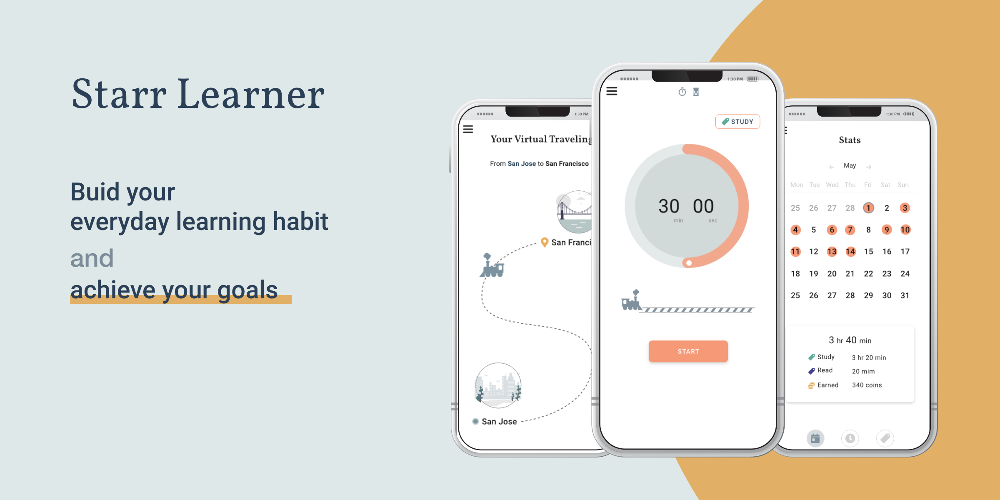
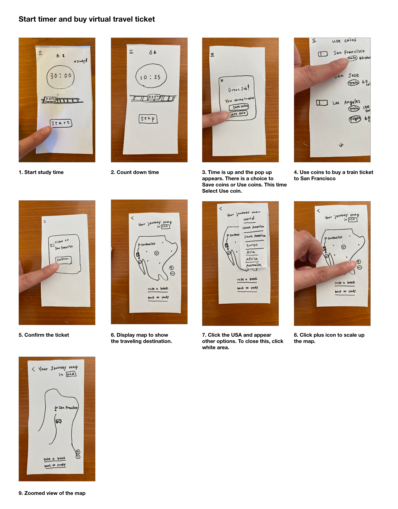
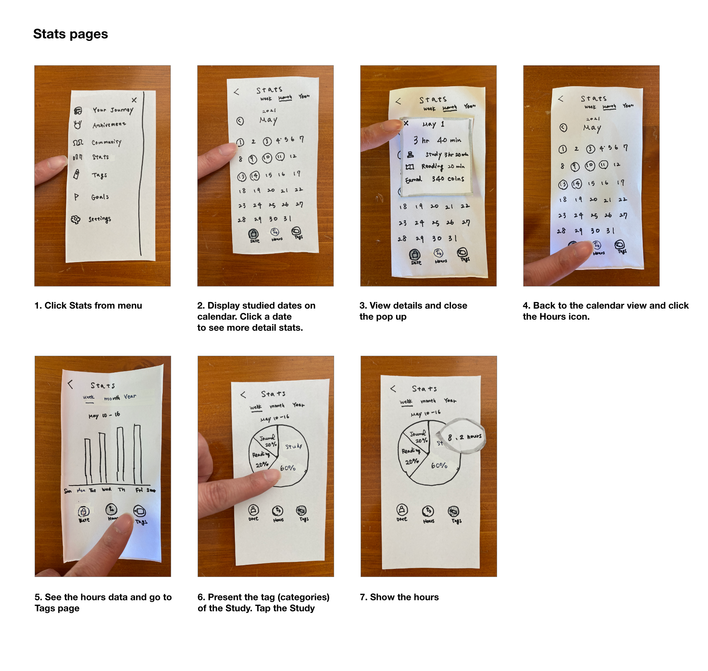
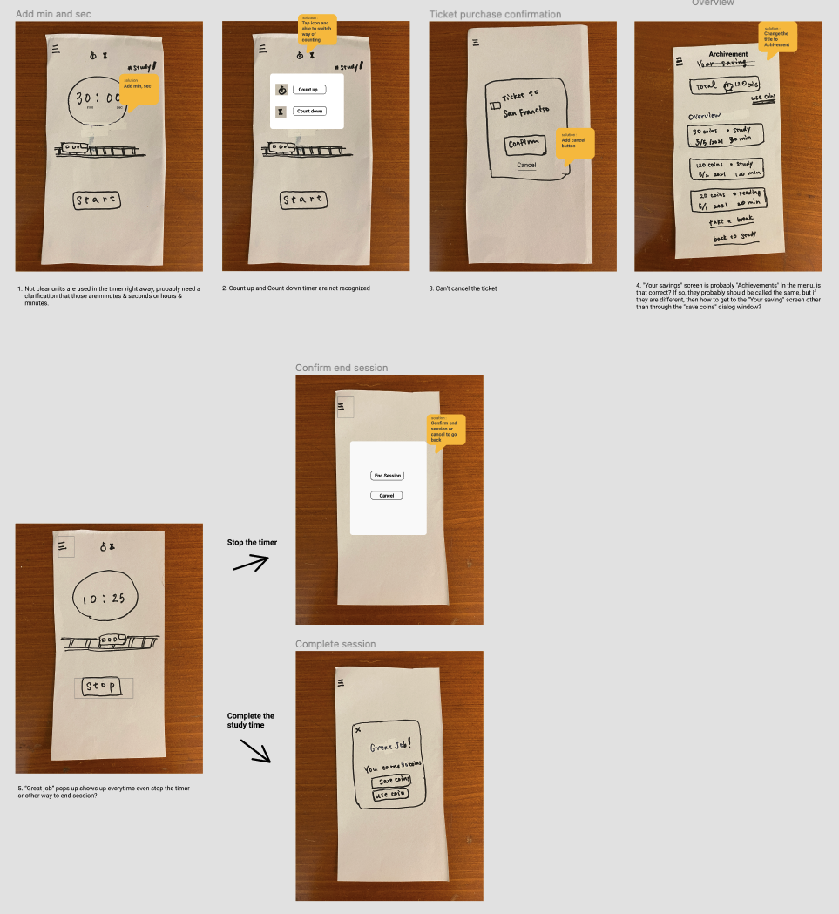
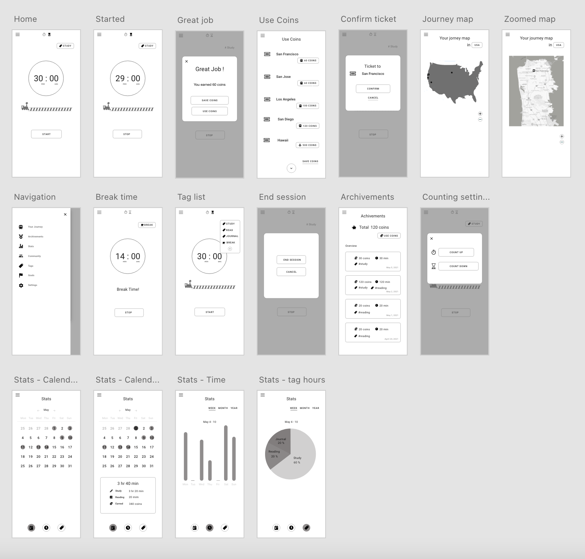
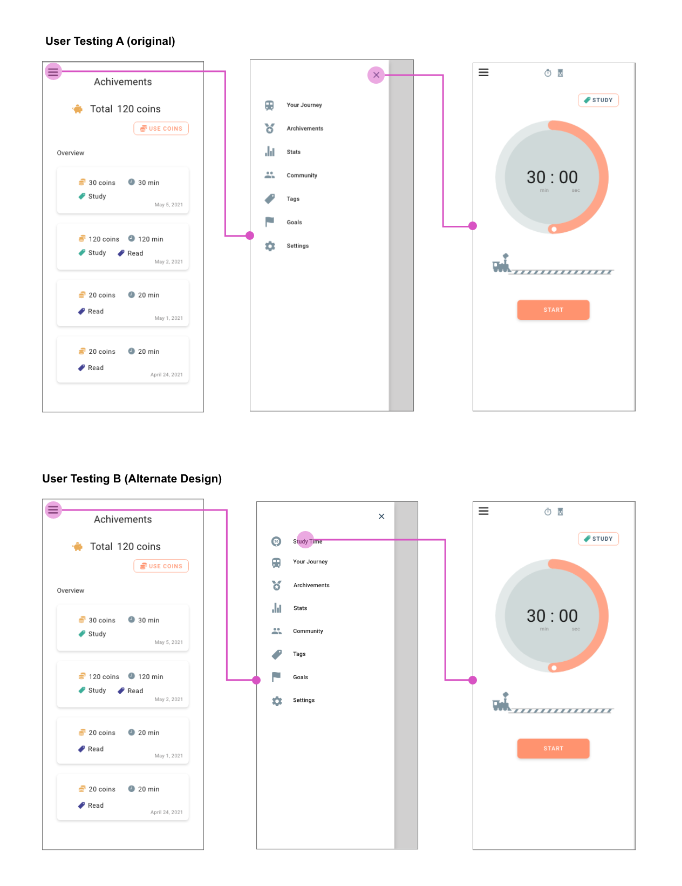
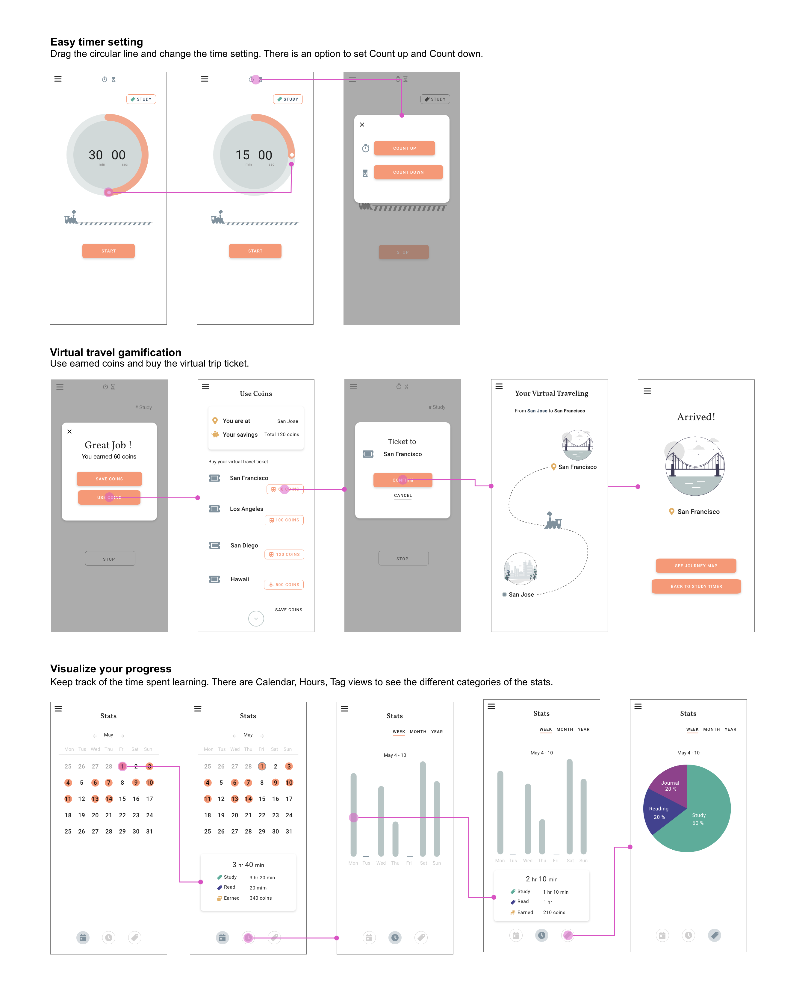

Starr Learner
This app supports people’s everyday learning by setting focused study time. To keep motivating people, the app provides a virtual traveling gamification system and visualizes users progress by tracking study time.
*This was the Capstone project of Interaction Design Specialization course of University of California, San Diego & Coursera
Challenge
People want to learn regularly and start learning but the motivation declines. In addition there are a lot of distractions and it's hard to focus. How to keep people motivated and build a learning habit?
App Goals
The app goal is set based on initial interviews and brainstorming.
- Have focused learning time — By using focus time, bring the user’s mind to focused learning mode to avoid other distractions.
- Set small goals and achieve them often— Users can set small focused time goals even like 15 or 30 min. Whenever they have little spare time, they can study.
- Feel accomplished— Visualize user’s data and show how much progress they have.
- Have some motivation to come back— Gamification features.
Here are storyboards that show the user’s struggles and how the app helps users to achieve their goal.

Paper prototype — make idea concrete
To achieve the app goals, created a paper prototype with 3 key features.
- Focused Time— Quick starting and easy setting timer.
- Gamification— Virtual traveling gamification. After the study timer is done, earn coins. By collecting coins, users can buy virtual travel tickets.
- Stats— Stats has 3 main views: Calendar view, Time and the Tag. Tag is more for the advanced users. Each focused timer can be tagged like Study, Reading and Journey to track the data.


Feedback and solutions — driving to solutions using Heuristic Evaluation
Based on the Heuristic evaluation from a peer student, the potential solutions are created. The evaluation pointed out that the app is missing some options like “option to quit timer” or “cancel to buy a ticket.” In addition, some expressions were not clear like a number’s unit or wording like “save coins vs achievement”
These are a list of changes based on the received Heuristic evaluations
- Not clear units are used in the timer, probably need a clarification that those are minutes & seconds or hours & minutes -> add min and sec for clarification
- Count up and Count down timer are not recognized ->create pop up that have option to change the countdown settings
- Can’t cancel the ticket ->add cancel button in case users change mind
- “Your savings” screen is probably “Achievements” in the menu, is that correct? If so, they probably should be called the same, but if they are different, then how to get to the “Your saving” screen other than through the “save coins” dialog window? ->change the naming to Achievements
- “Great job” pops up everytime even stop the timer or another way to end a session? ->create an End Session pop up so that users have a choice to quit if necessary.

Wireframe — move to digital form
Now it’s time to move from the paper prototype to a digital one.
User Testing — test main flows
A list of the testing flows used:
Testing flow #1
Set study focused timer. After the time is over, use earned coins and buy a ticket to San Francisco.
Testing flow #2
After the study time is over, save earned coins and check how many coins you have in total.
Testing flow #3
Check how many days you study in May and then see how many hours you study on May 1.
Below are the major problems found during user testing.
"The meaning of cancel is fuzzy. Is it canceling whole session or the canceling current stop operation?"
"Expected to stay on Achivement page when I close the nav, but went to timer page"
"I'd like to se how much coins do I have in total before using it"
"After I bought a ticket to San Francisco, I thought next page woukd be focoused the location but it is not"
A/B Testing — finding a better navigation
Original design is that when you close the navigation menu, you go back to the Study Timer (Home screen). The intention behind this is so the user can go quickly back to the home screen from any page. Faster navigation to the Study Timer = more learning. However, in previous user testing, users mentioned, “the close button on the navigation menu is confusing”. Therefore, A/B testing was conducted that focused on this section.
Hypothesis
Changing navigation menu design from Original to the Alternative will give less clicks.
Original Design: Closing nav goes to Study timer page
Alternative: Click the Study Timer menu on nav to the Study timer page. When closing nav, the page stays the same.
The metric was counting clicks from Achievements’ page to the Study Timer page.If there are fewer clicks to go to the Study Timer page, it means that the user finds the path easier than the other version.
*Straight path is 2 clicks both A and B Design.
A/B Testing Result- Clear navigation menu gives users more control
Hypothesis was proved.
How many times did users click while they were going from the Achievements page to the Study Timer page?
A: Original Design
- User 1: 24 clicks (couldn’t complete)
- User 2: 4 clicks
B: Alternate Design
- User 3: 2 clicks
- User 4: 2 clicks
The test results show, B: Alternative Design is the clearly easier design for the users. B users took 2 steps to get to the Study Timer page. They said “straight forward” “easy enough”. The other hand, the A:Original Design user group struggled. User 1 took over 24 clicks and couldn’t complete. She commented “enormously hard” and “completely stuck” during the tasks. User 2 clicked 4 times and he commented “not sure exactly how I got the page”, “surprised to come back here ”. According to their comments, they feel like they didn’t have control of the interaction.
App Key features — summarizing the design
Final Prototype
Further development — if I had more time
If I have time, I’d like to work on more gamification sections. Some users thought they could actually buy a ticket for traveling. To avoid that, I would like to update the graphics and some copy.
PROJECT: Starr Learner
YEAR: 2021
ROLE: UX/UI
BY: Adobe XD